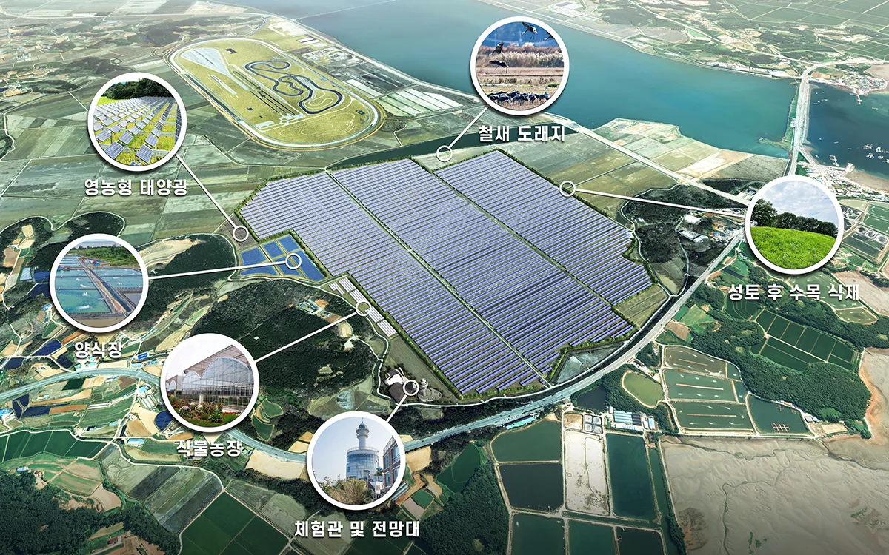

메이크 그룹의 블로그에 오신 것을 진심으로 환영합니다. 오늘은 저희가 태안 당암리 지역에 위치한 태양광 플랜트의 조감도 및 레이아웃 디자인을 어떻게 제작하는지에 대해 소개해드리려고 합니다.
1. 설계자료 송부 및 자료 분석
먼저, 고객으로부터 제공받은 설계자료를 분석합니다. 지역의 토평과 일조량, 환경적 요소를 자세히 살펴보며 프로젝트의 기반을 구축합니다.
2. 모델링 제작
분석한 데이터를 바탕으로 태양광 패널, 설비 등을 3D 모델로 제작합니다. 모델링을 통해 플랜트의 구조와 배치를 시각적으로 이해할 수 있게 됩니다.
3. 렌더링 결과물 리터치 및 레이아웃 제작
모델링 결과물을 렌더링하여 현실적인 이미지로 제작합니다. 그 후, 리터치 작업을 통해 최적의 시각 효과를 달성하며, 레이아웃을 디자인하여 조감도와 레이아웃이 조화롭게 결합되도록 합니다.
4. 고객 의견 반영 및 수정
고객과의 컨설팅을 통해 제작된 조감도와 레이아웃 디자인을 공유합니다. 고객의 의견을 수렴하며 수정 작업을 진행하여 디자인을 완벽하게 보완합니다.
5. 최종 완성 및 사후관리
고객의 요구와 수정 사항이 모두 반영된 최종 조감도와 레이아웃 디자인을 완성합니다. 또한, 프로젝트가 종료된 후에도 필요한 사후관리를 통해 고객의 만족을 지속적으로 유지합니다.
메이크 그룹은 항상 고객의 만족과 환경 보전을 최우선으로 생각합니다. 태안 당암리 태양광 플랜트 프로젝트를 통해 지속 가능한 미래를 위한 노력을 기울이겠습니다. 함께 깨끗한 에너지와 아름다운 환경을 만들어가는 여정에 함께해주시길 기대합니다. 감사합니다.
홈페이지
https://www.makegroup.co.kr/
블로그
https://blog.naver.com/makegroupcg